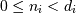
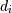
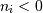
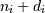
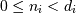
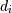
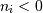
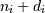
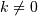
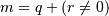

Indexing¶
ndarrays can be indexed using the standard Python x[obj] syntax, where x is the array and obj the selection. There are three kinds of indexing available: field access, basic slicing, advanced indexing. Which one occurs depends on obj.
Note
In Python, x[(exp1, exp2, ..., expN)] is equivalent to x[exp1, exp2, ..., expN]; the latter is just syntactic sugar for the former.
Basic Slicing and Indexing¶
Basic slicing extends Python’s basic concept of slicing to N dimensions. Basic slicing occurs when obj is a slice object (constructed by start:stop:step notation inside of brackets), an integer, or a tuple of slice objects and integers. Ellipsis and newaxis objects can be interspersed with these as well. In order to remain backward compatible with a common usage in Numeric, basic slicing is also initiated if the selection object is any non-ndarray sequence (such as a list) containing slice objects, the Ellipsis object, or the newaxis object, but not for integer arrays or other embedded sequences.
The simplest case of indexing with N integers returns an array
scalar representing the corresponding item. As in
Python, all indices are zero-based: for the i-th index  ,
the valid range is  where  is the
i-th element of the shape of the array. Negative indices are
interpreted as counting from the end of the array (i.e., if
, it means ).
,
the valid range is  where  is the
i-th element of the shape of the array. Negative indices are
interpreted as counting from the end of the array (i.e., if
, it means ).
All arrays generated by basic slicing are always views of the original array.
The standard rules of sequence slicing apply to basic slicing on a per-dimension basis (including using a step index). Some useful concepts to remember include:
The basic slice syntax is i:j:k where i is the starting index, j is the stopping index, and k is the step (). This selects the m elements (in the corresponding dimension) with index values i, i + k, ..., i + (m - 1) k where  and q and r are the quotient and remainder obtained by dividing j - i by k: j - i = q k + r, so that i + (m - 1) k < j.
Example
>>> x = np.array([0, 1, 2, 3, 4, 5, 6, 7, 8, 9]) >>> x[1:7:2] array([1, 3, 5])
Negative i and j are interpreted as n + i and n + j where n is the number of elements in the corresponding dimension. Negative k makes stepping go towards smaller indices.
Example
>>> x[-2:10] array([8, 9]) >>> x[-3:3:-1] array([7, 6, 5, 4])
Assume n is the number of elements in the dimension being sliced. Then, if i is not given it defaults to 0 for k > 0 and n - 1 for k < 0 . If j is not given it defaults to n for k > 0 and -1 for k < 0 . If k is not given it defaults to 1. Note that :: is the same as : and means select all indices along this axis.
Example
>>> x[5:] array([5, 6, 7, 8, 9])
If the number of objects in the selection tuple is less than N , then : is assumed for any subsequent dimensions.
Example
>>> x = np.array([[[1],[2],[3]], [[4],[5],[6]]]) >>> x.shape (2, 3, 1) >>> x[1:2] array([[[4], [5], [6]]])
Ellipsis expand to the number of : objects needed to make a selection tuple of the same length as x.ndim. There may only be a single ellipsis present.
Example
>>> x[...,0] array([[1, 2, 3], [4, 5, 6]])
Each newaxis object in the selection tuple serves to expand the dimensions of the resulting selection by one unit-length dimension. The added dimension is the position of the newaxis object in the selection tuple.
Example
>>> x[:,np.newaxis,:,:].shape (2, 1, 3, 1)
An integer, i, returns the same values as i:i+1 except the dimensionality of the returned object is reduced by 1. In particular, a selection tuple with the p-th element an integer (and all other entries :) returns the corresponding sub-array with dimension N - 1. If N = 1 then the returned object is an array scalar. These objects are explained in Scalars.
If the selection tuple has all entries : except the p-th entry which is a slice object i:j:k, then the returned array has dimension N formed by concatenating the sub-arrays returned by integer indexing of elements i, i+k, ..., i + (m - 1) k < j,
Basic slicing with more than one non-: entry in the slicing tuple, acts like repeated application of slicing using a single non-: entry, where the non-: entries are successively taken (with all other non-: entries replaced by :). Thus, x[ind1,...,ind2,:] acts like x[ind1][...,ind2,:] under basic slicing.
Warning
The above is not true for advanced indexing.
You may use slicing to set values in the array, but (unlike lists) you can never grow the array. The size of the value to be set in x[obj] = value must be (broadcastable) to the same shape as x[obj].
Note
Remember that a slicing tuple can always be constructed as obj and used in the x[obj] notation. Slice objects can be used in the construction in place of the [start:stop:step] notation. For example, x[1:10:5,::-1] can also be implemented as obj = (slice(1,10,5), slice(None,None,-1)); x[obj] . This can be useful for constructing generic code that works on arrays of arbitrary dimension.
Advanced Indexing¶
Advanced indexing is triggered when the selection object, obj, is a non-tuple sequence object, an ndarray (of data type integer or bool), or a tuple with at least one sequence object or ndarray (of data type integer or bool). There are two types of advanced indexing: integer and Boolean.
Advanced indexing always returns a copy of the data (contrast with basic slicing that returns a view).
Warning
The definition of advanced indexing means that x[(1,2,3),] is fundamentally different than x[(1,2,3)]. The latter is equivalent to x[1,2,3] which will trigger basic selection while the former will trigger advanced indexing. Be sure to understand why this is occurs.
Also recognize that x[[1,2,3]] will trigger advanced indexing, whereas x[[1,2,slice(None)]] will trigger basic slicing.
Integer array indexing¶
Integer array indexing allows selection of arbitrary items in the array based on their N-dimensional index. Each integer array represents a number of indexes into that dimension.
Purely integer array indexing¶
When the index consists of as many integer arrays as the array being indexed has dimensions, the indexing is straight forward, but different from slicing.
Advanced indexes always are broadcast and iterated as one:
result[i_1, ..., i_M] == x[ind_1[i_1, ..., i_M], ind_2[i_1, ..., i_M],
..., ind_N[i_1, ..., i_M]]
Note that the result shape is identical to the (broadcast) indexing array shapes ind_1, ..., ind_N.
Example
From each row, a specific element should be selected. The row index is just [0, 1, 2] and the column index specifies the element to choose for the corresponding row, here [0, 1, 0]. Using both together the task can be solved using advanced indexing:
>>> x = np.array([[1, 2], [3, 4], [5, 6]])
>>> x[[0, 1, 2], [0, 1, 0]]
array([1, 4, 5])
To achieve a behaviour similar to the basic slicing above, broadcasting can be used. The function ix_ can help with this broadcasting. This is best understood with an example.
Example
From a 4x3 array the corner elements should be selected using advanced indexing. Thus all elements for which the column is one of [0, 2] and the row is one of [0, 3] need to be selected. To use advanced indexing one needs to select all elements explicitly. Using the method explained previously one could write:
>>> x = array([[ 0, 1, 2],
... [ 3, 4, 5],
... [ 6, 7, 8],
... [ 9, 10, 11]])
>>> rows = np.array([[0, 0],
... [3, 3]], dtype=np.intp)
>>> columns = np.array([[0, 2],
... [0, 2]], dtype=np.intp)
>>> x[rows, columns]
array([[ 0, 2],
[ 9, 11]])
However, since the indexing arrays above just repeat themselves, broadcasting can be used (compare operations such as rows[:, np.newaxis] + columns) to simplify this:
>>> rows = np.array([0, 3], dtype=np.intp)
>>> columns = np.array([0, 2], dtype=np.intp)
>>> rows[:, np.newaxis]
array([[0],
[3]])
>>> x[rows[:, np.newaxis], columns]
array([[ 0, 2],
[ 9, 11]])
This broadcasting can also be achieved using the function ix_:
>>> x[np.ix_(rows, columns)]
array([[ 0, 2],
[ 9, 11]])
Note that without the np.ix_ call, only the diagonal elements would be selected, as was used in the previous example. This difference is the most important thing to remember about indexing with multiple advanced indexes.
Combining advanced and basic indexing¶
When there is at least one slice (:), ellipsis (...) or np.newaxis in the index (or the array has more dimensions than there are advanced indexes), then the behaviour can be more complicated. It is like concatenating the indexing result for each advanced index element
In the simplest case, there is only a single advanced index. A single advanced index can for example replace a slice and the result array will be the same, however, it is a copy and may have a different memory layout. A slice is preferable when it is possible.
Example
>>> x[1:2, 1:3]
array([[4, 5]])
>>> x[1:2, [1, 2]]
array([[4, 5]])
The easiest way to understand the situation may be to think in terms of the result shape. There are two parts to the indexing operation, the subspace defined by the basic indexing (excluding integers) and the subspace from the advanced indexing part. Two cases of index combination need to be distinguished:
- The advanced indexes are separated by a slice, ellipsis or newaxis. For example x[arr1, :, arr2].
- The advanced indexes are all next to each other. For example x[..., arr1, arr2, :] but not x[arr1, :, 1] since 1 is an advanced index in this regard.
In the first case, the dimensions resulting from the advanced indexing operation come first in the result array, and the subspace dimensions after that. In the second case, the dimensions from the advanced indexing operations are inserted into the result array at the same spot as they were in the initial array (the latter logic is what makes simple advanced indexing behave just like slicing).
Example
Suppose x.shape is (10,20,30) and ind is a (2,3,4)-shaped indexing intp array, then result = x[...,ind,:] has shape (10,2,3,4,30) because the (20,)-shaped subspace has been replaced with a (2,3,4)-shaped broadcasted indexing subspace. If we let i, j, k loop over the (2,3,4)-shaped subspace then result[...,i,j,k,:] = x[...,ind[i,j,k],:]. This example produces the same result as x.take(ind, axis=-2).
Example
Let x.shape be (10,20,30,40,50) and suppose ind_1 and ind_2 can be broadcast to the shape (2,3,4). Then x[:,ind_1,ind_2] has shape (10,2,3,4,40,50) because the (20,30)-shaped subspace from X has been replaced with the (2,3,4) subspace from the indices. However, x[:,ind_1,:,ind_2] has shape (2,3,4,10,30,50) because there is no unambiguous place to drop in the indexing subspace, thus it is tacked-on to the beginning. It is always possible to use .transpose() to move the subspace anywhere desired. Note that this example cannot be replicated using take.
Boolean array indexing¶
This advanced indexing occurs when obj is an array object of Boolean type, such as may be returned from comparison operators. A single boolean index array is practically identical to x[obj.nonzero()] where, as described above, obj.nonzero() returns a tuple (of length obj.ndim) of integer index arrays showing the True elements of obj. However, it is faster when obj.shape == x.shape.
If obj.ndim == x.ndim, x[obj] returns a 1-dimensional array filled with the elements of x corresponding to the True values of obj. The search order will be row-major, C-style. If obj has True values at entries that are outside of the bounds of x, then an index error will be raised. If obj is smaller than x it is identical to filling it with False.
Example
A common use case for this is filtering for desired element values. For example one may wish to select all entries from an array which are not NaN:
>>> x = np.array([[1., 2.], [np.nan, 3.], [np.nan, np.nan]])
>>> x[~np.isnan(x)]
array([ 1., 2., 3.])
Or wish to add a constant to all negative elements:
>>> x = np.array([1., -1., -2., 3])
>>> x[x < 0] += 20
>>> x
array([ 1., 19., 18., 3.])
In general if an index includes a Boolean array, the result will be identical to inserting obj.nonzero() into the same position and using the integer array indexing mechanism described above. x[ind_1, boolean_array, ind_2] is equivalent to x[(ind_1,) + boolean_array.nonzero() + (ind_2,)].
If there is only one Boolean array and no integer indexing array present, this is straight forward. Care must only be taken to make sure that the boolean index has exactly as many dimensions as it is supposed to work with.
Example
From an array, select all rows which sum up to less or equal two:
>>> x = np.array([[0, 1], [1, 1], [2, 2]])
>>> rowsum = x.sum(-1)
>>> x[rowsum <= 2, :]
array([[0, 1],
[1, 1]])
But if rowsum would have two dimensions as well:
>>> rowsum = x.sum(-1, keepdims=True)
>>> rowsum.shape
(3, 1)
>>> x[rowsum <= 2, :] # fails
IndexError: too many indices
>>> x[rowsum <= 2]
array([0, 1])
The last one giving only the first elements because of the extra dimension. Compare rowsum.nonzero() to understand this example.
Combining multiple Boolean indexing arrays or a Boolean with an integer indexing array can best be understood with the obj.nonzero() analogy. The function ix_ also supports boolean arrays and will work without any surprises.
Example
Use boolean indexing to select all rows adding up to an even number. At the same time columns 0 and 2 should be selected with an advanced integer index. Using the ix_ function this can be done with:
>>> x = array([[ 0, 1, 2],
... [ 3, 4, 5],
... [ 6, 7, 8],
... [ 9, 10, 11]])
>>> rows = (x.sum(-1) % 2) == 0
>>> rows
array([False, True, False, True], dtype=bool)
>>> columns = [0, 2]
>>> x[np.ix_(rows, columns)]
array([[ 3, 5],
[ 9, 11]])
Without the np.ix_ call or only the diagonal elements would be selected.
Or without np.ix_ (compare the integer array examples):
>>> rows = rows.nonzero()[0]
>>> x[rows[:, np.newaxis], columns]
array([[ 3, 5],
[ 9, 11]])
Detailed notes¶
These are some detailed notes, which are not of importance for day to day indexing (in no particular order):
- The native NumPy indexing type is intp and may differ from the default integer array type. intp is the smallest data type sufficient to safely index any array; for advanced indexing it may be faster than other types.
- For advanced assignments, there is in general no guarantee for the iteration order. This means that if an element is set more than once, it is not possible to predict the final result.
- An empty (tuple) index is a full scalar index into a zero dimensional array. x[()] returns a scalar if x is zero dimensional and a view otherwise. On the other hand x[...] always returns a view.
- If a zero dimensional array is present in the index and it is a full integer index the result will be a scalar and not a zero dimensional array. (Advanced indexing is not triggered.)
- When an ellipsis (...) is present but has no size (i.e. replaces zero :) the result will still always be an array. A view if no advanced index is present, otherwise a copy.
- the nonzero equivalence for Boolean arrays does not hold for zero dimensional boolean arrays.
- When the result of an advanced indexing operation has no elements but an individual index is out of bounds, whether or not an IndexError is raised is undefined (e.g. x[[], [123]] with 123 being out of bounds).
- When a casting error occurs during assignment (for example updating a numerical array using a sequence of strings), the array being assigned to may end up in an unpredictable partially updated state. However, if any other error (such as an out of bounds index) occurs, the array will remain unchanged.
- The memory layout of an advanced indexing result is optimized for each indexing operation and no particular memory order can be assumed.
- When using a subclass (especially one which manipulates its shape), the default ndarray.__setitem__ behaviour will call __getitem__ for basic indexing but not for advanced indexing. For such a subclass it may be preferable to call ndarray.__setitem__ with a base class ndarray view on the data. This must be done if the subclasses __getitem__ does not return views.
Field Access¶
See also
If the ndarray object is a structured array the fields of the array can be accessed by indexing the array with strings, dictionary-like.
Indexing x['field-name'] returns a new view to the array, which is of the same shape as x (except when the field is a sub-array) but of data type x.dtype['field-name'] and contains only the part of the data in the specified field. Also record array scalars can be “indexed” this way.
Indexing into a structured array can also be done with a list of field names, e.g. x[['field-name1','field-name2']]. Currently this returns a new array containing a copy of the values in the fields specified in the list. As of NumPy 1.7, returning a copy is being deprecated in favor of returning a view. A copy will continue to be returned for now, but a FutureWarning will be issued when writing to the copy. If you depend on the current behavior, then we suggest copying the returned array explicitly, i.e. use x[[‘field-name1’,’field-name2’]].copy(). This will work with both past and future versions of NumPy.
If the accessed field is a sub-array, the dimensions of the sub-array are appended to the shape of the result.
Example
>>> x = np.zeros((2,2), dtype=[('a', np.int32), ('b', np.float64, (3,3))])
>>> x['a'].shape
(2, 2)
>>> x['a'].dtype
dtype('int32')
>>> x['b'].shape
(2, 2, 3, 3)
>>> x['b'].dtype
dtype('float64')
Flat Iterator indexing¶
x.flat returns an iterator that will iterate over the entire array (in C-contiguous style with the last index varying the fastest). This iterator object can also be indexed using basic slicing or advanced indexing as long as the selection object is not a tuple. This should be clear from the fact that x.flat is a 1-dimensional view. It can be used for integer indexing with 1-dimensional C-style-flat indices. The shape of any returned array is therefore the shape of the integer indexing object.